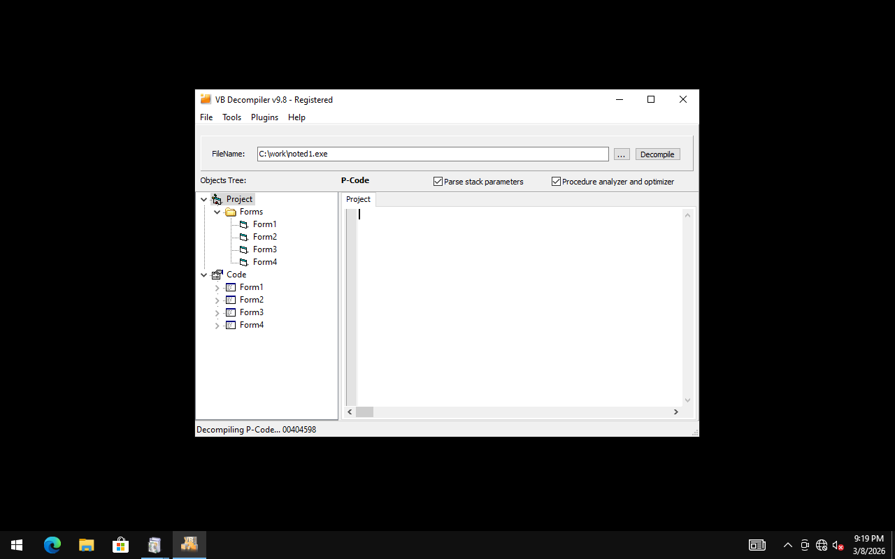

🔍 anexbust.zip
Program: anexbust | Author: going | AOL Version: 4.0 | Category: busters | Exe: anexbust.exe | VB: VB6 | Compile: native
📷 Screenshots

VB Decompiler Pro v9.8 — decompiled project view
AuthorCreditsAOL APIFormsDepsInteresting
Total unique strings: 370 | Interesting: 51 | Categorized: 15 | Other: 123 | Noise filtered: 181
🖊 Author Evidence (1)
You can change your handle by going to Options>User and clicking on Handle.
🤝 Credits & Greets (3)
greets
Greets
Greets to...
⚙ AOL API References (10)
FindWindowA
FindWindowExA
SendMessageA
AOL Frame25
AOL Child
_AOL_Listbox
_AOL_Icon
_AOL_Static
_AOL_Toolbar
_AOL_Combobox
📦 Dependencies (1)
MSVBVM60.DLL
📋 Decompiled Project Info
Type: Exe | Startup: Form1 | Company: ?
Version: 1.00.0 | Compile: native | Packed: False
🖼 Forms & Controls
Form1
Controls: TextBox txtRoom, PictureBox Picture1 "optz.", Label lblOptz "optz.", Label lblStop "[stop]", Label lblStart "start", Shape Shape1
Form2
Controls: Label lblTries "0", Label lblttlBusts "0", Label lblttlTries "0", Label lblLoads "0", Label lblHandle "n/a"
Menus: options "Options", options_stats "user", options_stats_handle "handle [n/a]", options_stats_load "loads [0]", options_status "status", options_status_tries "tries [0]", options_status_ttltries "ttltries [0]", options_status_busts "ttlbusts [0]", options_status_sep1 "-", options_status_show "show status", options_status_hide "hide status", options_style "style", options_style_bust "bust", options_style_run "run", options_sep1 "-", options_greets "greets", options_about "about", options_help "help", options_sep2 "-", options_exit "exit"
frmGreets
Controls: PictureBox Picture1 "x", Label Label2 "x", Label Label1, Shape Shape1
Timers: Timer2, Timer1
frmStats
Controls: Label Label3 "Total Busts: 0", Label Label2 "Total Tries: 0", Label Label1 "Tries: 0"
📜 Decompiled Functions
Form1 (2 functions)
Private Sub Picture1_MouseMove(Button As Integer, Shift As Integer, X As Single, Y As Single) '4090B0 [843b]
Private Sub txtRoom_KeyPress(KeyAscii As Integer) '4093C0 [224b]
Form2 (16 functions)
Private Sub Form_Load() '409450 [5470b]
Private Sub Form_Unload(Cancel As Integer) '40A250 [2444b]
Private Sub lblHandle_Change() '40A9D0 [340b]
Private Sub lblLoads_Change() '40AB40 [366b]
Private Sub lblTries_Change() '40ACD0 [596b]
Private Sub lblttlBusts_Change() '40AF40 [599b]
Private Sub lblttlTries_Change() '40B1B0 [599b]
Private Sub options_about_Click() '40B420 [681b]
Private Sub options_exit_Click() '40B5B0 [350b]
Private Sub options_greets_Click() '40B700 [257b]
Private Sub options_help_Click() '40B860 [979b]
Private Sub options_stats_handle_Click() '40BA40 [1164b]
Private Sub options_status_hide_Click() '40BCF0 [484b]
Private Sub options_status_show_Click() '40BE80 [491b]
Private Sub options_style_bust_Click() '40C050 [438b]
Private Sub options_style_run_Click() '40C190 [436b]
frmGreets (6 functions)
Private Sub Form_Load() '40D930 [2159b]
Private Sub Form_Unload(Cancel As Integer) '40DF10 [433b]
Private Sub Label1_Change() '40DFF0 [1540b]
Private Sub Label2_Click() '40E2B0 [390b]
Private Sub Timer1_Timer() '40E440 [886b]
Private Sub Timer2_Timer() '40E670 [7699b]
frmStats (1 functions)
Private Sub Form_Load() '40F190 [517b]
modAnexBust (12 functions)
Public Sub Proc_2_0_40C2D0 [1854b]
Public Sub Proc_2_1_40C4E0 [697b]
Public Sub Proc_2_2_40C5A0 [1382b]
Public Sub Proc_2_3_40C990 [320b]
Public Sub Proc_2_4_40CA50 [3051b]
Public Sub Proc_2_5_40CD60 [605b]
Public Sub Proc_2_6_40CEA0 [937b]
Public Sub Proc_2_7_40D090 [652b]
Public Sub Proc_2_8_40D1D0 [1085b]
Public Sub Proc_2_9_40D360 [1982b]
Public Sub Proc_2_10_40D660 [475b]
Public Sub Proc_2_11_40D800 [340b]
🔎 Decompiled String References (73)
Show all decompiled strings
AOL Frame25
AOL Toolbar
_AOL_Toolbar
_AOL_Combobox
Edit
ScaleWidth
ScaleHeight
Line
RICHCNTL
AOL Frame25
MDIClient
AOL Child
RICHCNTL
_AOL_Listbox
_AOL_Icon
_AOL_Static
Total Busts:
ttlbusts [
Anex Bust help -
Most of the options on this buster are self-explanatory. If you have the 'style' set to 'bust' then the buster will act like a normal buster (it busts into the room). If you have the style set to 'run' then the buster will run to the chatroom (Ex. If you tried to run to 'mp3', it would try 'mp3','mp32','mp33','mp34' etc.)
You can change your handle by going to Options>User and clicking on Handle.
You can show or hide the status window.
Remember that the program will save your settings. So if you have the style set to 'run', it will still be set to 'run' when you load it up again.
-Viper
Anex Bust
About Anex Bust -
This is just a simple Buster that I made. Its nothing really special (except the fact that it has a run option which I don't see on much busters). I spent some time on it, and did put some work into it. But I guess it was all worth it. Now I have a pretty fast buster. I wouldn't say its the fastest, but its pretty fast compaired to some of the ones out today.
-Viper
Anex Bust
Enter your handle
n/a
handle [
loads [
\anexbust.dat
loads
data
handle
n/a
ttltries
ttlbusts
style
showstat
Total Tries:
ttltries [
\anexbust.dat
handle
data
ttltries
ttlbusts
style
showstat
Tries:
tries [
Greets to...
Tahoma
Greets
Greets to...
Greets to...
Toxic
ryze
riptide
crims0n
Diamond Dawg
stanky
d0tz
tetra
pio
pyro
notorious
dlux
bone (auoq)
sober
And anyone else I foregot.
⭐ Interesting Strings (51)
!This program cannot be run in DOS mode.
Room to bust
C:\Program Files\Microsoft Visual Studio\VB98\VB6.OLB
winmm.dll
shell32.dll
VBA6.DLL
Total Busts: 0
Total Tries: 0
Tries: 0
handle [n/a]
loads [0]
tries [0]
ttltries [0]
ttlbusts [0]
show status
hide status
A*\AC:\My Documents\Michael\Team Anex\anexbust\anexbust.vbp
Anex Bust
[start]
America Online
<b>B</b><font color=#666666>y <font color=#000000><b>V</b><font color=#666666>iper <font color=#000000>
<b>A</b><font color=#666666>ctivated
<b>D</b><font color=#666666>eactivated
<font color=#000000></u><b>B</b><font color=#666666>usting <font color=#000000>[<b>
<font color=#000000></u><b>B</b><font color=#666666>usted <font color=#000000>[<b>
<b>T</b><font color=#666666>ries <font color=#000000>[<b>
<b>B</b><font color=#666666>y <font color=#000000><b>V</b><font color=#666666>iper
<font color=#000000></u><b>R</b><font color=#666666>unning <font color=#000000>[<b>
<font color=#000000><b>R</b><font color=#666666>an <font color=#000000>[<b>
<font color=#000000></u><b>S</b><font color=#666666>topped <font color=#000000>[<b>
\anexbust.dat
handle [
Total Busts:
ttlbusts [
Total Tries:
ttltries [
About Anex Bust -
Anex Bust help -
This is just a simple Buster that I made. Its nothing really special (except the fact that it has a run option which I don't see on much busters). I spent some time on it, and did put some work into it. But I guess it was all worth it. Now I have a pretty fast buster. I wouldn't say its the fastest, but its pretty fast compaired to some of the ones out today.
Most of the options on this buster are self-explanatory. If you have the 'style' set to 'bust' then the buster will act like a normal buster (it busts into the room). If you have the style set to 'run' then the buster will run to the chatroom (Ex. If you tried to run to 'mp3', it would try 'mp3','mp32','mp33','mp34' etc.)
You can show or hide the status window.
Remember that the program will save your settings. So if you have the style set to 'run', it will still be set to 'run' when you load it up again.
Enter your handle
AOL Toolbar
Diamond Dawg
bone (auoq)
And anyone else I foregot.
VS_VERSION_INFO
FileVersion
ProductVersion
anexbust.exe
📄 Other Strings (123)
TDESTap
Project1
uments\
TDESTap6
TDESTap:O
txtRoom
Tahoma0
Picture1
lblOptz
lblStop
lblStart
anexbust
modAnexBust
frmGreets
frmStats
TDESTap5
kernel32
RtlMoveMemory
CloseHandle
GetWindowThreadProcessId
TDESTap`7@
OpenProcess
ReadProcessMemory
GetCursorPos
GetMenu
GetMenuItemCount
ShellExecuteA
GetMenuItemID
GetMenuStringA
GetPrivateProfileStringA
GetSubMenu
GetWindowTextA
GetWindowTextLengthA
IsWindowVisible
mciSendStringA
PostMessageA
SetCursorPos
SetWindowPos
ShowCursor
ShowWindow
sndPlaySoundA
ReleaseCapture
WritePrivateProfileStringA
TDESTaplblLoads
lblttlBusts
options
options_greets
options_status_sep1
options_style
options_about
options_style_run
options_help
options_status_show
options_status_hide
options_sep2
options_exit
options_stats_handle
options_stats
options_sep1
options_stats_load
options_status
options_status_tries
options_style_bust
lblttlTries
options_status_busts
lblHandle
options_status_ttltries
lblTries
TDESTap?
TDESTap*O
TDESTapC
TDESTapLabel3
TDESTapD
TDESTap@
TDESTap:
lblLoads
Options
Qj h
Rj h
Pj h
jPh R@
h ]@
h ^@
Rh ^@
_adj_fptan
_adj_fdiv_m64
_adj_fprem1
_adj_fdiv_m32
_adj_fdiv_m16i
_adj_fdivr_m16i
EVENT_SINK_AddRef
DllFunctionCall
_adj_fpatan
EVENT_SINK_Release
_CIsqrt
EVENT_SINK_QueryInterface
_adj_fprem
_adj_fdivr_m64
_adj_fdiv_m32i
_adj_fdivr_m32i
_adj_fdivr_m32
_adj_fdiv_r
_CIatan
_allmul
aol://2719:2-2-
ttltries
ttlbusts
showstat
loads [
tries [
ScaleWidth
RICHCNTL
ScaleHeight
MDIClient
riptide
crims0n
notorious
VarFileInfo
Translation
StringFileInfo
ProductName
InternalName
OriginalFilename
🗑 Noise / Binary Data (181)
Rich
.text
`.data
.rsrc
333333
Form1
optz.
[stop]
start
Shape1
VB5!
Form2
Form
h(7@
user32
hx7@
h48@
hx8@
hT9@
h<:@
hd;@
hT<@
h,=@
hp=@
h@>@
__vbaLenBstr
__vbaStrI4
Timer2
Label1
Label2
Timer1
__vbaErrorOverflow
__vbaStrVarVal
__vbaFpI4
__vbaStrCmp
__vbaSetSystemError
__vbaStrToAnsi
__vbaFreeVarList
__vbaStrVarMove
__vbaStrR8
__vbaFreeStrList
__vbaStrCat
__vbaStrMove
__vbaFreeStr
__vbaStrCopy
__vbaPrintObj
__vbaR4Str
__vbaFreeObjList
__vbaHresultCheckObj
__vbaObjSetAddref
__vbaNew2
__vbaFreeObj
__vbaCastObj
__vbaObjSet
__vbaVarDup
__vbaFpR8
__vbaEnd
__vbaInStrVar
__vbaI4Var
__vbaFpI2
__vbaLateMemCall
__vbaI2Var
__vbaFreeVar
__vbaLateMemCallLd
__vbaVarDiv
__vbaR4Var
__vbaStrToUnicode
Form3
Label3
user
status
style
bust
about
help
exit
\SVW
h4A@
h4)@
h$A@
hDA@
jlhTA@
hhA@
hTA@
h|A@
hGm@
h|5@
hnp@
f9F<
PhTI@
hdI@
hDB@
h0B@
hPB@
PhdJ@
RPj
Ph@M@
TSVW
QRj
8SVW
jph|5@
jth|5@
jxh|5@
j|h|5@
pSVW
Rh4R@
QFRj
RFPj
Ph4R@
PSVW
,SVW
0SVW
4SVW
h,S@
hLS@
hhS@
h|$@
PhxY@
<SVW
SVW
h$\@
h@\@
hX\@
hp\@
LSVW
XSVW
|SVW
@SVW
DSVW
h0^@
Qh0^@
hD^@
PhD^@
hX^@
RhX^@
hx^@
Qhx^@
h0]@
Rh0]@
F4f-
(SVW
_CIcos
_CIsin
__vbaChkstk
__vbaExceptHandler
__vbaFPException
_CIlog
_CItan
_CIexp
1u
1&'(
Tahoma
stop
#32770
Button
</u></i><font color=#000000><font face="Arial Narrow"><sup>
</sup>
-<sub>
</sub> < a href=www.anexsoft.com><font color=#000000></u><b>A</b><font color=#666666>nex Bust</a> <font color=#000000>
</sub> <font color=#000000></u></i><b>
</b>
</b>]
handle
data
loads
Tries:
-Viper
Line
Edit
sober
Toxic
ryze
stanky
d0tz
tetra
pyro
dlux
3&'(
jjjj
040904B0
1.00